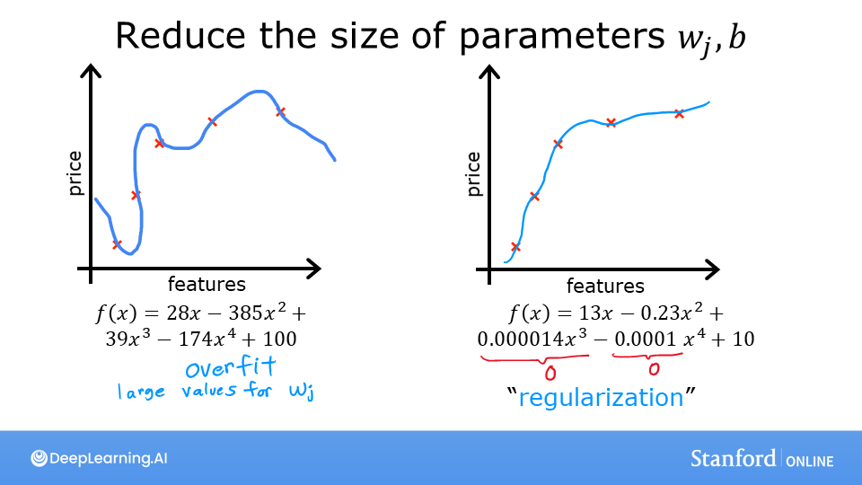
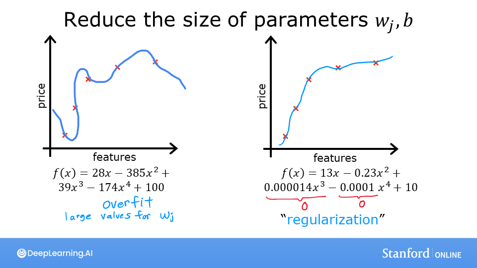

Code
%matplotlib widget
import matplotlib.pyplot as plt
from ipywidgets import Output
from plt_overfit import overfit_example, output
plt.style.use('deeplearning.mplstyle')you’ll take a look at some examples of overfitting that you can adjust by clicking on the options in the plot. In the lab you’ll be able to add your own data points by clicking on the plot, and see how that changes the fitted curve.
You can try examples for both regression and classification. You can also change the degree of the polynomial to see how the curve either overfits or underfits the data.
This The problem of overfitting is part of DeepLearning.AI course: Machine Learning Specialization / Course 1: Supervised Machine Learning: Regression and Classification In this course we will learn the difference between supervised and unsupervised learning and regression and classification tasks. Develop a linear regression model. Understand and implement the purpose of a cost function. Understand and implement gradient descent as a machine learning training method.
This is my learning experience of data science through DeepLearning.AI. These repository contributions are part of my learning journey through my graduate program masters of applied data sciences (MADS) at University Of Michigan, DeepLearning.AI, Coursera & DataCamp. You can find my similar articles & more stories at my medium & LinkedIn profile. I am available at kaggle & github blogs & github repos. Thank you for your motivation, support & valuable feedback.
These include projects, coursework & notebook which I learned through my data science journey. They are created for reproducible & future reference purpose only. All source code, slides or screenshot are intellectual property of respective content authors. If you find these contents beneficial, kindly consider learning subscription from DeepLearning.AI Subscription, Coursera, DataCamp
 
 
In this lab, you will explore: - the situations where overfitting can occur - some of the solutions
%matplotlib widget
import matplotlib.pyplot as plt
from ipywidgets import Output
from plt_overfit import overfit_example, output
plt.style.use('deeplearning.mplstyle')The week’s lecture described situations where overfitting can arise. Run the cell below to generate a plot that will allow you to explore overfitting. There are further instructions below the cell.
plt.close("all")
display(output)
ofit = overfit_example(False)In the plot above you can: - switch between Regression and Categorization examples - add data - select the degree of the model - fit the model to the data
Here are some things you should try: - Fit the data with degree = 1; Note ‘underfitting’. - Fit the data with degree = 6; Note ‘overfitting’ - tune degree to get the ‘best fit’ - add data: - extreme examples can increase overfitting (assuming they are outliers). - nominal examples can reduce overfitting - switch between Regression and Categorical to try both examples.
To reset the plot, re-run the cell. Click slowly to allow the plot to update before receiving the next click.
Notes on implementations: - the ‘ideal’ curves represent the generator model to which noise was added to achieve the data set - ‘fit’ does not use pure gradient descent to improve speed. These methods can be used on smaller data sets.